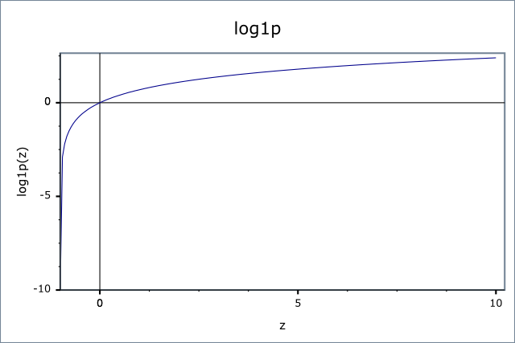

|
Home | Libraries | People | FAQ | More |


#include <boost/math/special_functions/log1p.hpp>
namespace boost{ namespace math{ template <class T> calculated-result-type log1p(T x); template <class T, class Policy> calculated-result-type log1p(T x, const Policy&); }} // namespaces
Returns the natural logarithm of x+1.
The return type of this function is computed using the result
type calculation rules: the return is double
when x is an integer type and T otherwise.
The final Policy argument is optional and can be used to control the behaviour of the function: how it handles errors, what level of precision to use etc. Refer to the policy documentation for more details.
There are many situations where it is desirable to compute log(x+1). However, for small x
then x+1 suffers from catastrophic cancellation
errors so that x+1 == 1
and log(x+1) == 0,
when in fact for very small x, the best approximation to log(x+1) would be x.
log1p calculates the best
approximation to log(1+x) using a Taylor series expansion for accuracy
(less than 2ɛ). Alternatively note that there are faster methods available,
for example using the equivalence:
log(1+x) == (log(1+x) * x) / ((1-x) - 1)
However, experience has shown that these methods tend to fail quite spectacularly once the compiler's optimizations are turned on, consequently they are used only when known not to break with a particular compiler. In contrast, the series expansion method seems to be reasonably immune to optimizer-induced errors.
Finally when BOOST_HAS_LOG1P is defined then the float/double/long double
specializations of this template simply forward to the platform's native
(POSIX) implementation of this function.
The following graph illustrates the behaviour of log1p:

For built in floating point types log1p
should have approximately 1 epsilon accuracy.
A mixture of spot test sanity checks, and random high precision test values calculated using NTL::RR at 1000-bit precision.